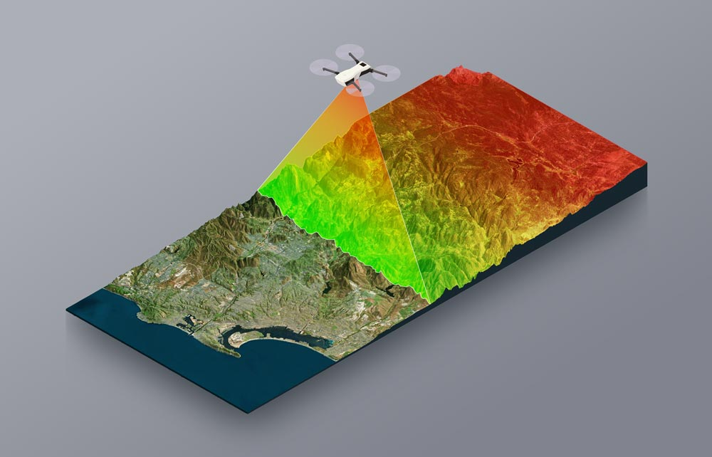
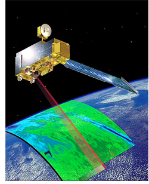
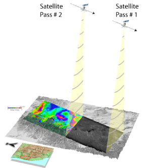
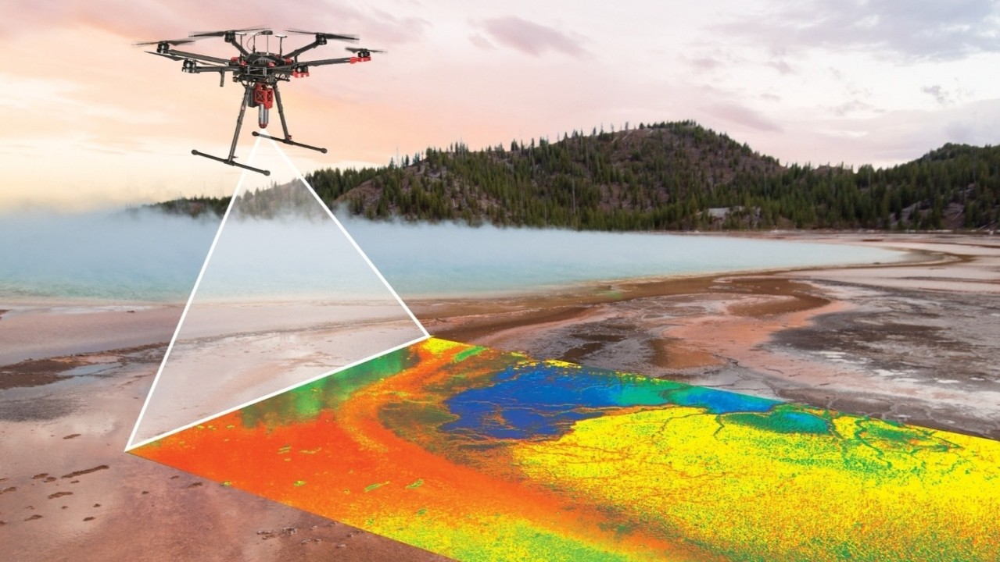

Common Questions
Table of Contents
Types of Remote Sensing
- LiDAR: Light Detection and Ranging, is a method of remote sensing that uses light from pulsed lasers to measure the distances pulsed to get an accurate 3-D readings of the land.

MODIS: Moderate Resolution Imaging Spectroradiometer, is an instrument on the Terra and Aqua Satellites that scan the Earth’s surface as the satellites orbit. MODIS views the entire Earth every 1-2 days.

InSAR: Interferometric Synthetic Aperture Radar, is imaging that maps ground deformations. InSAR uses radar imaging that penetrates cloud and weather coverage to get accurate readings of the Earth’s surface.

Landsat: The Landsat Satellite Program is a satellite that is constantly acquiring data, from space based imaging of moderate land monitoring. It captures multi-spectral images of the land surface.
Sentinel-2: is a Europe based satellite imagery program that uses 2 satellites in orbit for multi-spectral imaging of the land and vegetation.
Drones: UAV Remote Sensing is the use of unmanned aerial vehicles equipped with sensors that are constantly scanning a specific area of the Earth’s surface when they are in the air. These UAV’s can be equipped with LiDAR sensors, MODIS sensors, InSAR sensors and many others. They are alternative to satellite imaging.

Uses of Artificial Intelligence in Remote Sensing
What is Image Classification?
From viso.ai:
“A computer analyzes an image in the form of pixels. It does it by considering the image as an array of matrices, with the size of the matrix dependent on the image resolution. Put simply, image classification in a computer’s view is the analysis of this statistical data using algorithms. In digital image processing, image classification is done by automatically grouping pixels into specified categories, so-called “classes.”
How does Object Detection in AI work?
From Daten and Wissen:
“AI identifies objects in images by looking for visual features that distinguish one object from another. These could be edges, textures, or shapes that appear in the image. Through machine learning, AI becomes proficient at recognizing these features, even in unfamiliar settings. It’s similar to how humans learn to recognize objects: through repeated exposure and pattern recognition. The more data the AI gets, the better it becomes at identifying objects, even in challenging environments like low light or busy scenes.”
How does AI do Pattern Recognition?
From viso.ai:
“AI pattern recognition using neural networks is currently the most popular method for pattern detection. Neural networks are based on parallel subunits referred to as neurons that simulate human decision-making. They can be viewed as massively parallel computing systems consisting of a huge number of simple processors with many interconnections (Neurons).
The most popular and successful form of machine learning using neural networks is deep learning, which applies deep convolutional neural networks (CNN) to solve classification tasks.
Today, neural network pattern recognition has the edge over other methods because it can change the weights repeatedly on iteration patterns. In recent years, deep learning has proven to be the most successful method to solve recognition tasks. For more information and detailed descriptions of what neural networks are all about, we recommend you read our guide about Machine Learning and Deep Learning.”
How does AI achieve Feature Extraction?
From IBM:
“First, the model takes in input data, then the feature extractor transforms the data into a numerical representation that can be used to compute the dimensionality reduction methods for feature extraction. These representations are stored in feature vectors for the model to perform algorithms for data reduction.”
What is Data Fusion?
From Windward:
“Here’s how data fusion happens:
- Data acquisition and validation: data is continuously collected from various sources and standardized for analysis. Before moving forward, it is validated to remove inaccuracies, and redundant or erroneous information.
- Feasibility and assignment: the validated data is evaluated to ensure it reflects realistic behavior patterns, after which it is assigned to the most appropriate entities, using advanced matching techniques.
- Conflict resolution and refinement: in cases of conflicting data assignments, a scoring mechanism resolves any ambiguities. The data is then further refined to maintain the accuracy and integrity of entity paths.
- Data optimization: the final step involves streamlining the dataset, retaining only the most relevant information to ensure efficient processing in downstream applications.”